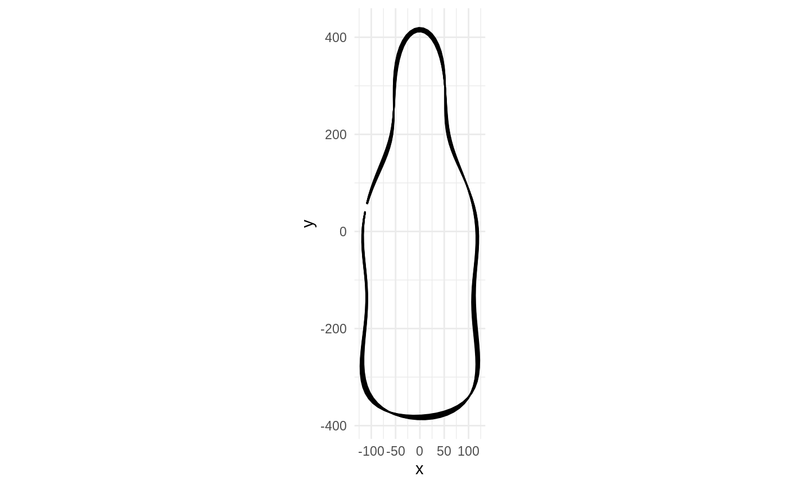
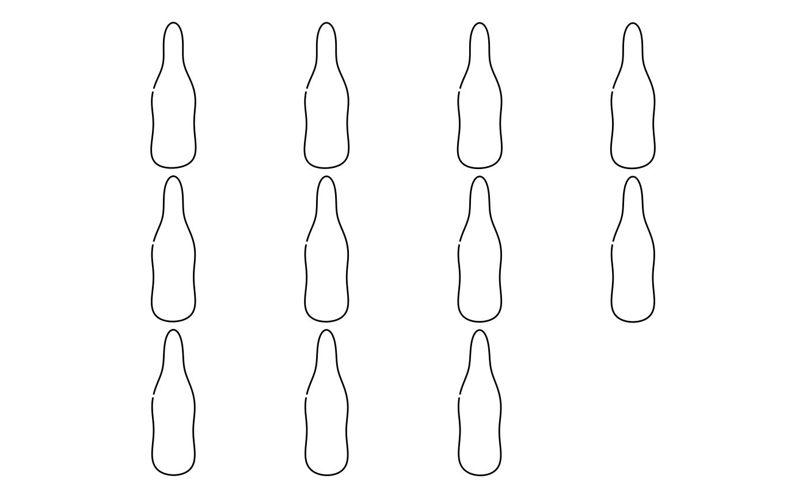

morphospace.RdVersatile function to reconstruct shapes from statistical objects
morphospace(x, xy)
| x | a statistical object. Currently supported: stat_pca |
|---|---|
| xy | a tibble with positions to calculate. Default to morphospace_range on PC1 and PC2 |
mom_tbl with raw shapes and other useful columns
x <- bot %>% efourier(6) %>% stat_pca()#>#>pos1 <- tibble::tibble(PC1=seq(-5, 5, 1)) pos2 <- tibble::tibble(PC1=seq(-5, 5, 1), PC2=seq(-5, 5, 1)) m <- x %>% morphospace(pos1) # both useless m %>% pile()
m %>% mosaic()
m %>% morphospace_template() # warning is normal, only PC1 was passed#> Warning: Unknown or uninitialised column: `y`.#> # A tibble: 11 x 9 #> coo name number x size y x_adjust y_adjust size_adjust #> <coo> <chr> <dbl> <dbl> <dbl> <dbl> <dbl> <dbl> <dbl> #> 1 <tibble [120 × … coe 1 -5 2.86 0 0 0 1 #> 2 <tibble [120 × … coe 1 -4 2.86 0 0 0 1 #> 3 <tibble [120 × … coe 1 -3 2.86 0 0 0 1 #> 4 <tibble [120 × … coe 1 -2 2.86 0 0 0 1 #> 5 <tibble [120 × … coe 1 -1 2.86 0 0 0 1 #> 6 <tibble [120 × … coe 1 0 2.86 0 0 0 1 #> 7 <tibble [120 × … coe 1 1 2.86 0 0 0 1 #> 8 <tibble [120 × … coe 1 2 2.86 0 0 0 1 #> 9 <tibble [120 × … coe 1 3 2.86 0 0 0 1 #> 10 <tibble [120 × … coe 1 4 2.86 0 0 0 1 #> 11 <tibble [120 × … coe 1 5 2.86 0 0 0 1 #> ❯mom_tbl